Chuẩn bị để tự xây bot của bạn
Cài một công cụ AI, Node.js/Git và chuẩn bị tài khoản. Bộ bot và hướng dẫn cài được gửi riêng khi bắt đầu học. Trong trang học, nút Copy gửi AI dùng để lấy câu gửi cho AI; nút Copy gửi bot dùng để lấy câu gửi vào Zalo. Các thao tác còn lại làm theo hướng dẫn bên cạnh.
Bảng kiểm nhanh
Đánh dấu khi thực sự hoàn tất. Mở lại bằng cùng trình duyệt để xem tiến độ.
Công cụ cần có
| Công cụ | Dùng làm gì? | Chuẩn bị lúc nào? |
|---|---|---|
| Một AI: Codex / Claude Code / Antigravity | Đọc mã, giải thích và cấu hình theo câu lệnh của bạn | Trước bài 1; phải mở được thư mục, không chỉ chat hỏi đáp |
| Node.js từ 22 | Công cụ kiểm chương trình trên máy | Cài ở Phần 2 bên dưới; nguồn Node.js |
| Tài khoản Zalo | Tạo danh tính bot của bạn | Bài 2 |
| Tài khoản Cloudflare | Nơi chương trình chạy khi tắt máy | Bài 3; Cloudflare Dashboard |
| Tài khoản OpenAI và khóa riêng cho bot | AI trả lời tin nhắn cho bot | Bài 4; OpenAI Platform |
Phí dùng AI để cài bot và phí để bot dùng OpenAI trả lời tin nhắn là hai khoản khác nhau. Kiểm giá/quyền trên tài khoản thực tế; trang này không yêu cầu mua lại gói bạn đã có.
Phần 1 · Chọn một AI
Chỉ chọn một công cụ cho đợt học đầu tiên. Bài 0 trang học dùng chung một câu lệnh để AI tự cài skill.
Codex
Chuẩn bị tài khoản
Dùng tài khoản ChatGPT của chính bạn. Kiểm quyền dùng Codex trong tài khoản; không nhập khóa OpenAI của bot vào màn hình đăng nhập. Chỉ cần chọn một AI cho khóa học này.
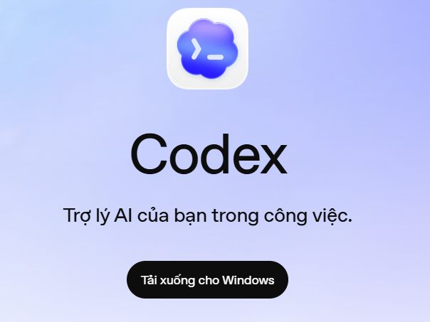
Chạy bộ cài Windows
Mở bộ cài; nếu Microsoft Store xuất hiện thì chờ tải xong. Máy Mac dùng bộ cài macOS.
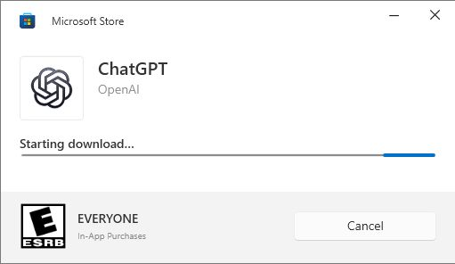
Đăng nhập
Bấm Continue to sign in; dùng tài khoản ChatGPT của bạn rồi quay lại app.
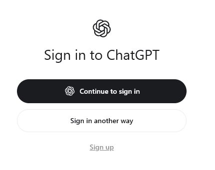
Thiết lập ban đầu
Nếu có khảo sát, chọn thông tin phù hợp hoặc bỏ qua khi có nút Skip.
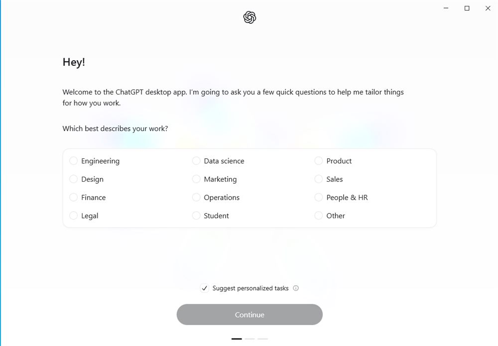
Dữ liệu từ công cụ khác
Nếu hiện Import work from other AI apps, có thể chọn Skip để tiếp tục.
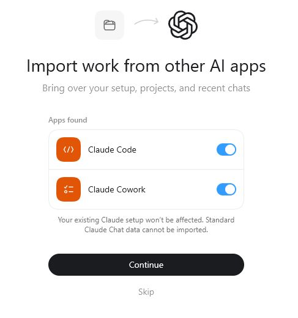
Nếu Windows hỏi quyền
Chỉ khi hộp thoại xuất hiện: kiểm tên ứng dụng ChatGPT và nhà phát hành đã xác minh OpenAI LLC như ảnh. Đúng bộ cài bạn vừa tải thì chọn Yes; khác thông tin thì dừng kiểm lại nguồn tải.
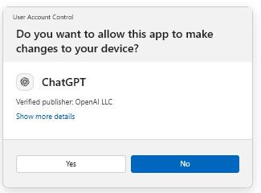
Nhận biết nút mở dự án
Bấm tên dự án phía trên ô nhắn để thấy New project như ảnh. Chưa cần chọn thư mục; bạn sẽ tải mã và dùng nút này ở Bài 0 trang học.
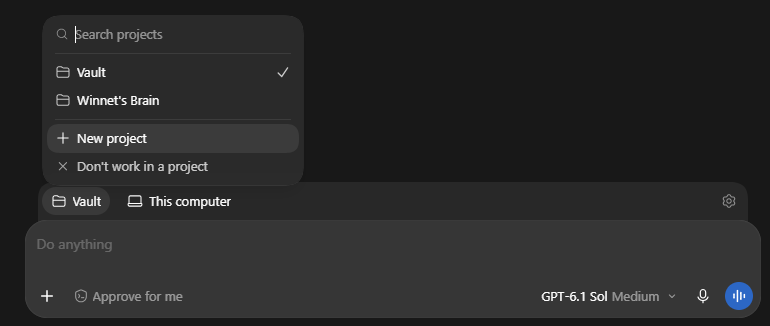
Đăng nhập được Codex là xong phần cài công cụ; mở thư mục bot ở Bài 0. Khi cài bot, dùng chế độ cho AI mở và sửa thư mục trên máy. Chỉ gửi tin hỏi đáp trong ChatGPT thì AI chưa sửa được bộ bot.
AI tự cài skill ở Bài 0 trang học. Hướng dẫn skill Codex.
Claude Code
Chuẩn bị tài khoản
Đăng nhập tài khoản Claude của chính bạn. Tab Code cần quyền sử dụng tương ứng; nếu được yêu cầu nâng gói, kiểm gói Pro, Max, Team hoặc Enterprise. Tài khoản ChatGPT và key OpenAI không dùng để đăng nhập Claude.
Tải và cài Desktop
Mở trang tải Claude → chọn Download đúng Windows hoặc macOS → mở bộ cài và hoàn tất. Dùng ứng dụng Desktop có tab Code, không cần tự cài thêm công cụ gõ lệnh cho bài này.
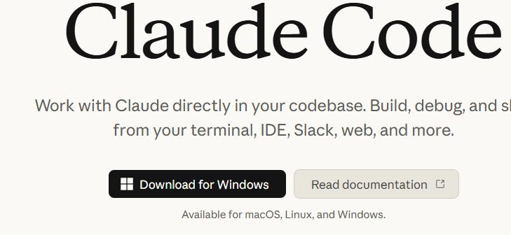
Đăng nhập và chọn Code
Mở Claude, đăng nhập bằng tài khoản vừa chuẩn bị; hoàn tất đăng nhập trên trình duyệt rồi quay lại app. Chọn tab Code ở trên như ảnh. Ô nhắn nằm dưới cùng. Tab Chat chỉ để hỏi đáp; chọn tab Code để AI làm việc với thư mục bot.
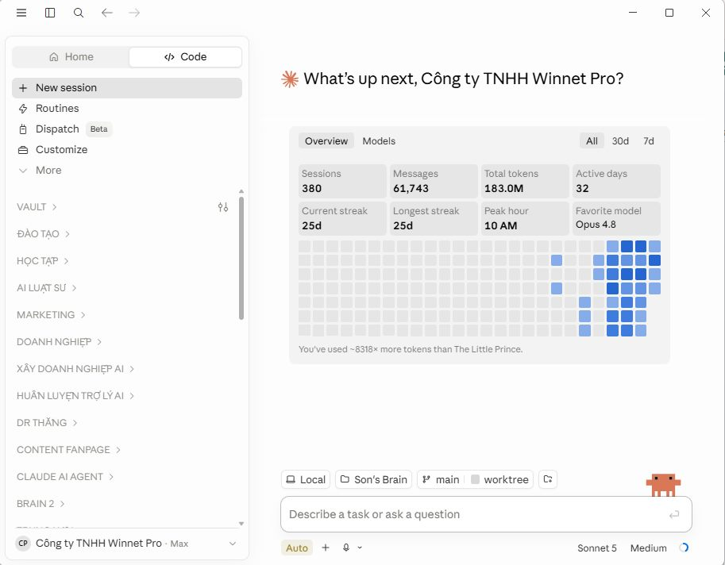
Chọn thư mục trên máy
Trong tab Code tìm Local và Select folder / Project folder. Chưa cần chọn thư mục; bạn sẽ tải mã và mở dự án ở Bài 0 trang học.
Cần ảnh đúng Claude Code ở bước này; che tài khoản và tên dự án riêng. Ảnh nguồn Claude có thông tin của người khác nên chưa dùng.
Chỉ chụp vùng thao tác; che khóa, email và thông tin người khác.Khi Claude bị lỗi cài đặt hoặc thiếu Git
Thông báo quyền Administrator / Cowork
Nếu bộ cài có Install without Cowork, chọn mục đó: khóa học dùng Code, chưa cần Cowork. Nếu vẫn cần quyền cài, kiểm bộ cài từ trang Claude chính thức rồi dùng Run as administrator. Không phải máy nào cũng gặp bước này.
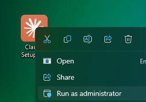
Git is required for local sessions
Nếu Claude báo thiếu Git, cài Git theo Phần 2 bên dưới. Một số chế độ làm việc cần Git để lưu các lần sửa chương trình. Tải Git tại đây, chọn đúng x64/ARM64 của máy rồi cài. Mac dùng hướng dẫn Git cho macOS. Không gỡ bot hay xóa thư mục để sửa lỗi này.
Thoát hẳn Claude bằng Quit rồi mở lại. Trong cửa sổ PowerShell mới, chạy lệnh dưới; thấy git version kèm số phiên bản là máy đã nhận Git.
git --version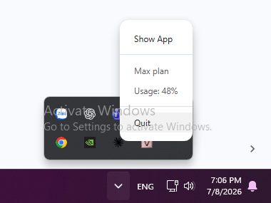
Nguồn kiểm lại ngày 12/10/2026: Claude Desktop: Git errors và account access. Nếu lỗi khác, giữ nguyên thông báo và phiên bản ứng dụng để hỏi AI; không thử cài lại lặp nhiều lần.
Nguồn cài và chọn thư mục Claude Code.
Đăng nhập Claude và vào được tab Code; mở thư mục bot ở Bài 0. Chọn chế độ lập trình có quyền đọc file; không chỉ tải file lên một cuộc chat Claude thông thường.
AI tự cài skill ở Bài 0 trang học. Hướng dẫn skill Claude Code.
Antigravity
Tải đúng bản
Mở trang tải Antigravity. Windows chọn x64/ARM64 phù hợp; Mac chọn Apple Silicon hoặc Intel.
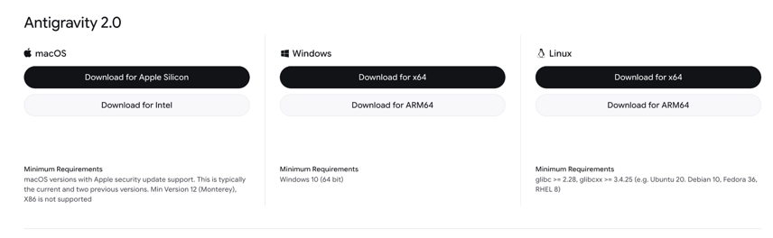
Đăng nhập
Mở app, chọn Continue with Google và đăng nhập tài khoản của bạn.
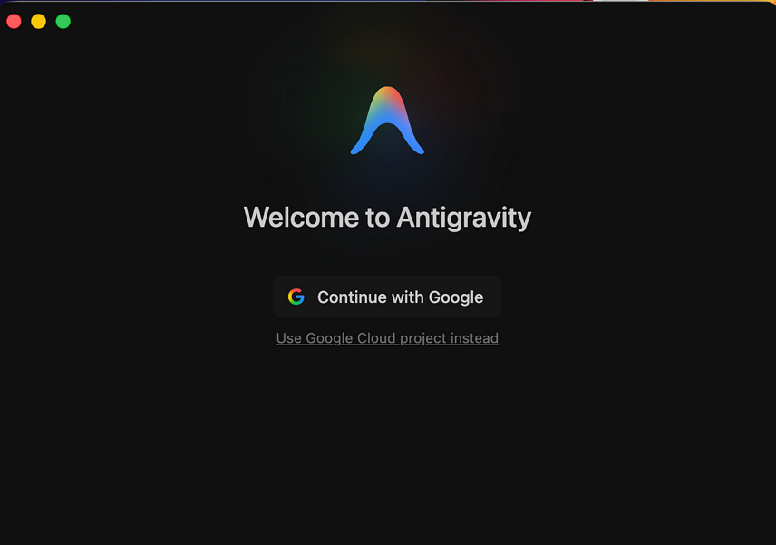
Quay lại app
Sau đăng nhập, chọn Open Antigravity khi trình duyệt hỏi mở ứng dụng.
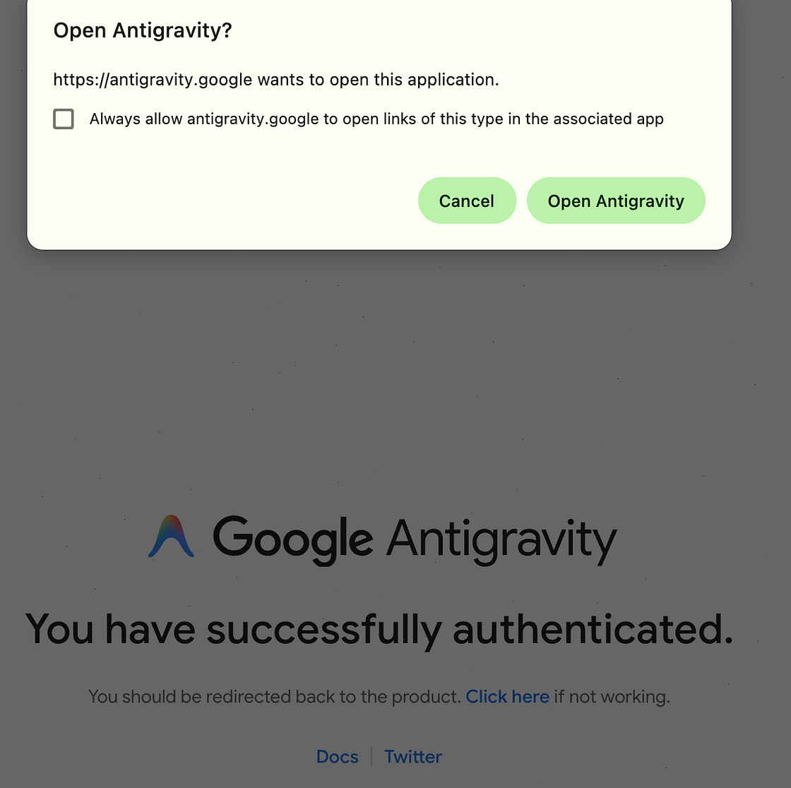
Lựa chọn dữ liệu
Đọc Security Notice & Data Use; tự chọn có chia sẻ dữ liệu cải thiện sản phẩm không rồi Next.
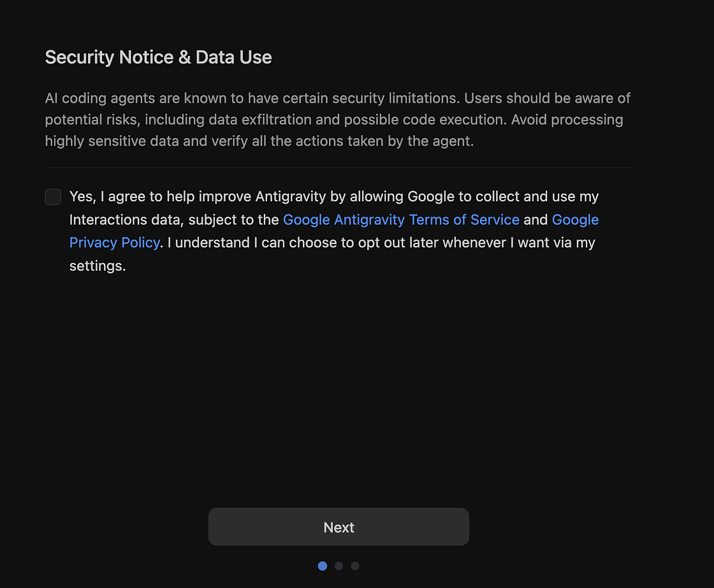
Giao diện
Chọn System (theo máy), Light (sáng) hoặc Dark (tối), rồi Next (tiếp tục).
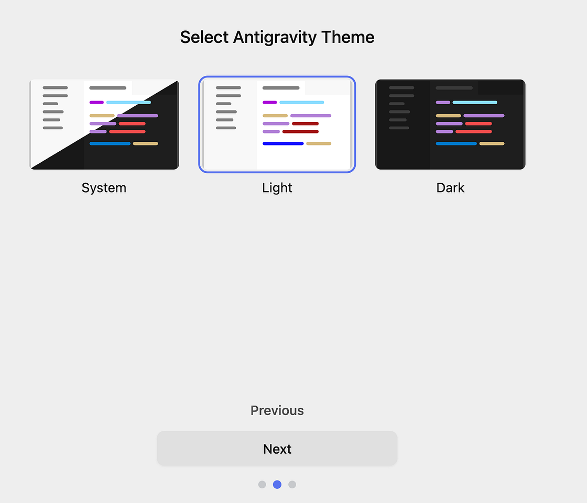
Hoàn tất
Nếu hiện Build with Google: các tiện ích bổ sung chưa cần dùng; giữ chưa chọn và bấm Finish (hoàn tất).
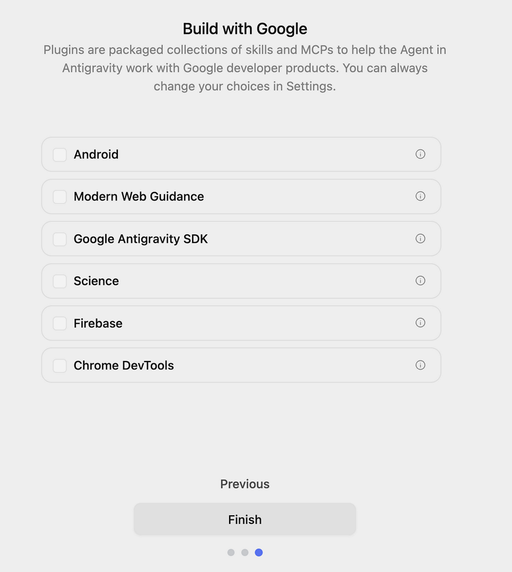
Mở dự án
Trong Projects tìm New Project/Add Folder theo phiên bản. Bạn sẽ chọn thư mục bot ở Bài 0 sau khi tải mã.
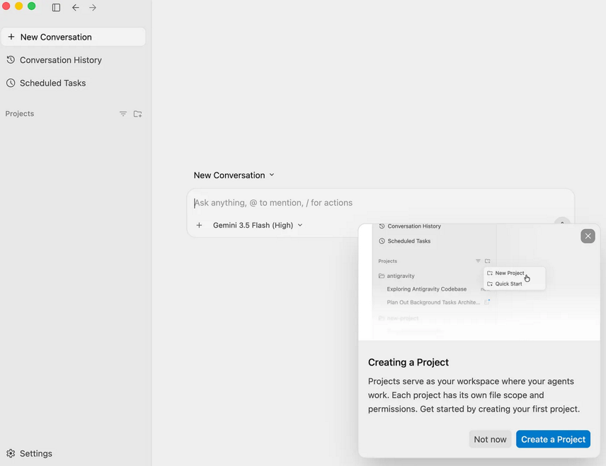
Tải Antigravity · Nguồn chọn thư mục.
Đăng nhập và vào được màn hình Projects; mở thư mục bot ở Bài 0. Mỗi phiên bản ứng dụng có thể đặt bộ chỉ dẫn ở chỗ khác. AI sẽ tự tìm và cài ở Bài 0.
AI tự xác định nơi cài skill phù hợp ở Bài 0 trang học. Hướng dẫn skill Antigravity.
Phần 2 · Cài Node.js và Git
Cài hai công cụ dưới đây để AI làm việc với bộ bot. Máy đã có phiên bản phù hợp thì bỏ qua cài lại.
Cài Node.js
Node.js giúp AI chạy và kiểm chương trình bot trên máy. Cần phiên bản 22 trở lên.
Trên Windows, mở PowerShell; trên Mac, mở Terminal. Sao chép lệnh bên dưới rồi nhấn Enter:
node -vNếu hiện v22 hoặc số lớn hơn, bạn không cần cài lại. Nếu báo không tìm thấy lệnh hoặc số nhỏ hơn 22: mở trang tải Node.js, chọn bản LTS phù hợp với máy rồi mở file cài. Giữ các lựa chọn có sẵn và bấm tiếp tục đến khi xong.
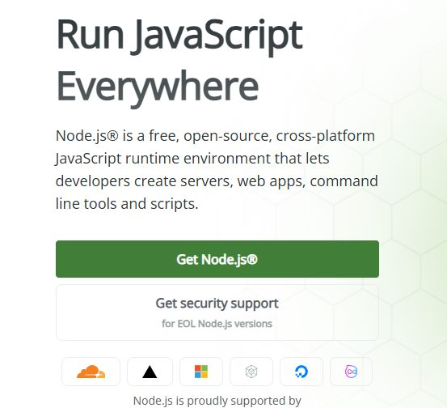
Đóng rồi mở lại PowerShell/Terminal, chạy lại lệnh. Thấy phiên bản từ 22 trở lên là đạt.
Cài Git
Git giúp AI tải bộ chỉ dẫn và theo dõi những lần sửa chương trình bot. Bạn chỉ cần cài một lần.
git --versionNếu hiện git version kèm số thì máy đã có Git. Nếu báo không tìm thấy lệnh, mở trang tải Git, chọn Windows hoặc macOS theo máy của bạn, tải và cài theo hướng dẫn. Cài xong, đóng rồi mở lại cửa sổ gõ lệnh và kiểm lại.
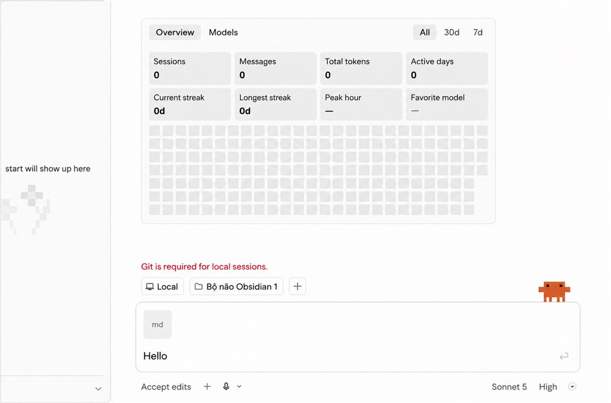
Phần 3 · Sẵn sàng vào học
Xong khi bạn đăng nhập được một AI, kiểm được Node/Git và có tài khoản Zalo/Cloudflare của mình. Chưa cần tải mã, cài skill hoặc nhập khóa.
Bạn đã hoàn tất phần chuẩn bị. Anh Lộc sẽ gửi riêng trang học để bắt đầu cài bot.